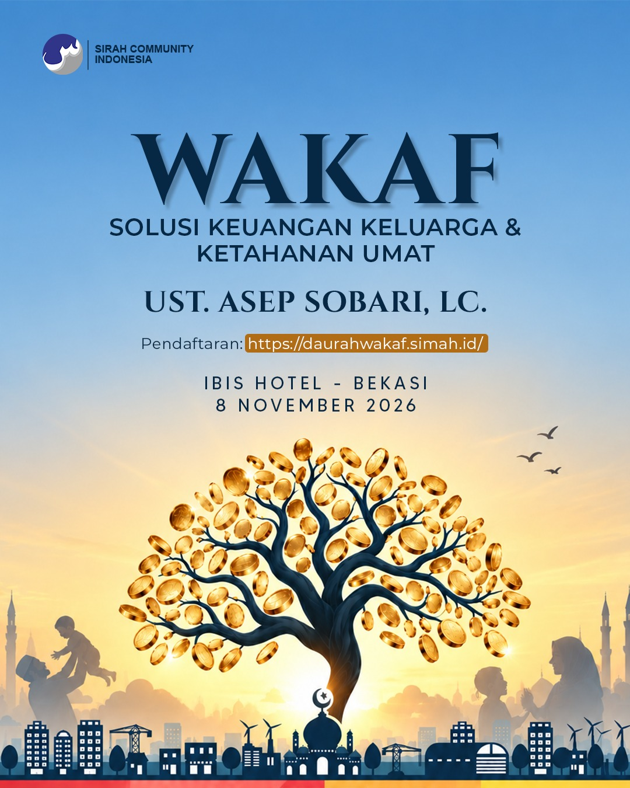

Step 1 of 4

WAKAF
SOLUSI KEUANGAN KELUARGA & KETAHANAN UMAT
UST. ASEP SOBARI, LC.
8 November 2026
Nama Lengkap
No. WhatsApp
Kota Domisili
Email (opsional)
Latar Belakang
Informasi Pembayaran
Silakan transfer ke rekening berikut:
Bank Jago Syariah: 5058 9285 9537
a.n WINA HUWAINA
Bank Jago Syariah: 5058 9285 9537
a.n WINA HUWAINA
Infaq Pendaftaran
Anda boleh memilih salah satu opsi berikut ini
Nominal Lainnya
Bukti Transfer
Bagian ini untuk mengetahui kapasitas dan sektor bisnis Anda, guna melihat peluang sinergi wakaf produktif.
Nama Bisnis / Perusahaan
Bidang Usaha
Sebutkan Bidang Usaha
Ketertarikan Utama Mengikuti Daurah Ini (bisa pilih lebih dari satu)
Sebutkan Ketertarikan Lainnya
Bagian ini untuk memetakan keahlian yang mungkin bisa diwakafkan (Wakaf Keahlian/Profesi) guna mendukung nazhir atau ekosistem wakaf.
Profesi / Jabatan Saat Ini
Instansi / Tempat Bekerja
Ketertarikan Utama Mengikuti Daurah Wakaf Ini (bisa pilih lebih dari satu)
Sebutkan Ketertarikan Lainnya
Terima kasih!
Pendaftaran Anda untuk Daurah Wakaf telah berhasil kami terima. Tim kami akan menghubungi Anda melalui WhatsApp jika diperlukan.
Gabung Grup WhatsApp Daurah Wakaf